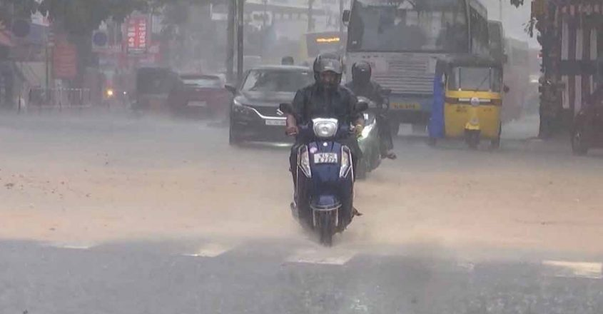
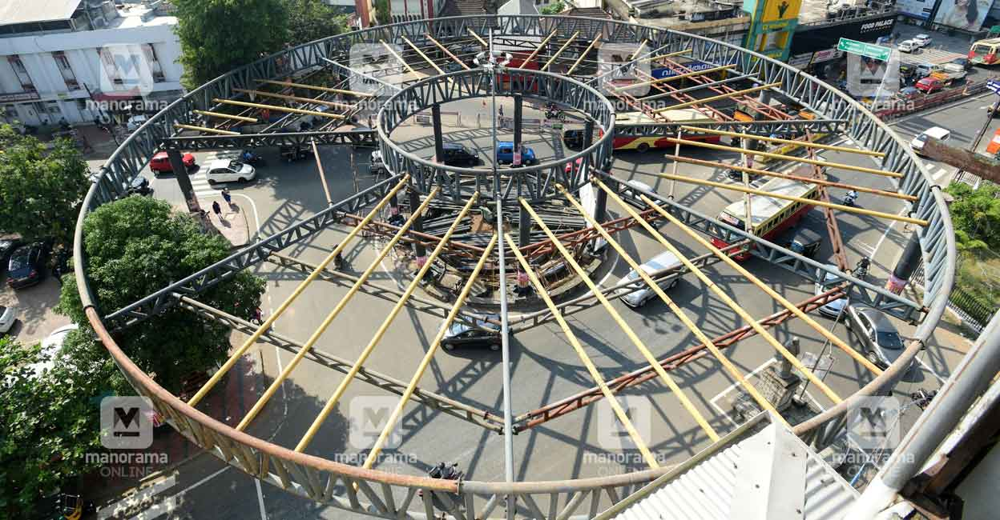

Entertainment tax not applicable for unsold concert tickets
Decode Politics: Why Rahul Gandhi gave up Wayanad,
retained Rae Bareli, as Priyanka is set for poll debut
With this decision, the Congress leader sends a clear message:
that the party is not giving up on the Hindi heartland and will
continue its fight to regain ground with the 2027 UP Assembly
polls in mind.With this decision, the Congress leader sends a clear message:
that the party is not giving up on the Hindi heartland and will
continue its fight to regain ground with the 2027 UP Assembly
polls in mind.With this decision, the Congress leader sends a clear message:
that the party is not giving up on the Hindi heartland and will
continue its fight to regain ground with the 2027 UP Assembly
The Congress on Monday announced that Rahul Gandhi would
retain his seat in Rae Bareli, Uttar Pradesh, and give up
Wayanad in Kerala where Congress general secretary Priyanka
Gandhi Vadra,his sister, will make her electoral debut. The
announcement came after Congress’ top leadership on Monday
held discussions at party president Mallikarjun Kharge’s residence
“You are now going to have two MPs, I will keep visiting,”Rahul said
in a message to the people of Wayanad.
“The people of Wayanad gave me support, the energy to fight at a very difficult time.”
Addressing the media, Priyanka said, “I won’t let the people of Wayanad feel Rahul’s absence.
I will work hard, try my best to make everyone happy in Wayanad, be a good representative.”
Kerala records season's highest rainfall, Revenue Min chairs review meet

Thiruvananthapuram: Kerala Revenue Minister K Rajan convened a review meeting with district collectors
on Wednesday to address rain-related issues in the state.Speaking to the media after the meeting,the minister
highlighted that Kerala had experienced the heaviest rainfall of the monsoon season on Wednesday.
According to the Kerala State Disaster Management Authority (KSDMA),the rainfall exceeded normal levels,
averaging 69.6 mm across the state Among the districts, Kottayam recorded the highest rainfall at 103 mm
In specific regions, Kidangoor received the highest rainfall of the season with 199 mm (in the last 24 hours).
The state has collaborated with the Centre to deploy National Disaster Response Force (NDRF) teams across nine districts:
Ernakulam, Idukki, Pathanamthitta, Alappuzha, Malappuram, Kollam, Kozhikode, Thrissur, and Wayanad.
During the meeting, district collectors raised concerns about night travel, leading to discussions on the potential
implementation of a night travel ban.Authorities have also been instructed to remove trees considered hazardous.
The state has collaborated with the Centre to deploy National Disaster Response Force (NDRF) teams across nine districts:
Ernakulam, Idukki, Pathanamthitta, Alappuzha, Malappuram, Kollam, Kozhikode, Thrissur, and Wayanad.
NEET scam:Kerala Assembly passes unanimous motion against Centre
Thiruvananthapuram: The Kerala Legislative Assembly on Wednesday stopped short
of calling for the restoration of the state-level conduct of the medical entrance
examination. In a Substantive Motion passed unanimously in the Assembly, the House
reminded the Centre that the state had conducted complaint-free pre-medical tests
earlier but, however, did not urge the NDA government to give back the states their
former right to conduct the medical entrance test.
Through the motion, the House expressed its general sense that the National Testing Agency (NTA)
has once again demonstrated that it is incapable of conducting in an impeccable and trustworthy
manner examinations that decide the future of lakhs of students in the country "It was after ending the
medical entrance exams that were conducted in an unimpeachable manner by states that the centre
introduced NEET (National Eligibility cum Entrance Test)," the motion said.
"The House strongly disapproves of the Union government's decision to stand by the NTA that
has by its negligence and incompetence thrown lakhs of students who had taken the exam in Kerala,
and their parents, into the depths of uncertainty and endangered their future," it said.
The motion urged the Union government to take immediate steps to remove the fears and concerns
of students and their parents. The motion criticised the Centre for taking the stand that there
was no proof of question paper leak. "But after this, the NET also had to be cancelled following
the detection of irregularities. In addition to this, NEET-PG and CSIR-NET exams were also cancelled,"
the motion said.
Public funds cannot be wasted on projects like Kottayam Skywalk: Ganesh Kumar

Thiruvananthapuram: Transport Minister Ganesh Kumar on Wednesday informed the Assembly that the construction
of the Kottayam Skywalk cannot be carried out as he believed the project would be a waste of public funds.
He said the project, which was initially estimated to cost Rs 5 crore, will now require over Rs 17.82 crore
to be completed. "The cost will go up if land has to be acquired. Even if the skywalk is built spending
so much money, it would have to be demolished for other future development projects in Kottayam," said Ganesh.
He said in such a situation, it was not possible to proceed with the construction of the skywalk using the funds
of the Road Safety Authority. The minister was responding to Congress MLA Thiruvanchoor Radhakrishnan's
demand that the construction of the skywalk is completed at the earliest. "When Thiruvanchoor was the forest minister,
he ruthlessly binned a project I had submitted before his department. Please do not think this is my revenge for that rejection,"
quipped Ganesh.
He further said the contract for the skywalk was given to KITCO on the instructions of the then minister in violation
of the law to award such constructions to Roads and Bridges Corporation. "I wondered what was this structure
in the middle of Kottayam town. I thought it was a sculpture by some artist exhibiting at Kochi Biennale who
did it as a personal favour for the MLA. It was only after I took charge as minister that I found out it was a skywalk," he said.
Entertainment tax not applicable for unsold concert tickets: Kerala HC
Kochi: The Kerala High Court on Wednesday directed the Maradu Municipality to refund
the entertainment tax levied on unsold tickets of a music concert. Justice Gopinath P stated
that entertainment tax could only be charged under Section 3 of the Kerala Local Authorities
Entertainment Tax Act, 1961 for sold tickets and not on unsold tickets.
The Court's observation came during consideration of a petition by Jose Thomas Performing
Arts Center (JTPAC). The JTPAC had organized a music concert within Maradu Municipality's jurisdiction.
The petitioner complied with the Kerala Local Authorities Entertainment Tax Act, 1961 and Kerala Local
Authorities Entertainment Tax Rules, 1962, paying an entertainment tax of Rs 1,24,080, Service Cess of
Rs 3,102, and a security deposit of Rs 50,000 for 1020 tickets. Each ticket was priced at Rs 600,
but only 265 were sold, leaving 755 unsold tickets.
The Court's observation came during consideration of a petition by Jose Thomas Performing
Arts Center (JTPAC). The JTPAC had organized a music concert within Maradu Municipality's jurisdiction.
The petitioner complied with the Kerala Local Authorities Entertainment Tax Act, 1961 and Kerala Local
Authorities Entertainment Tax Rules, 1962, paying an entertainment tax of Rs 1,24,080, Service Cess of
Rs 3,102, and a security deposit of Rs 50,000 for 1020 tickets. Each ticket was priced at Rs 600,
but only 265 were sold, leaving 755 unsold tickets.